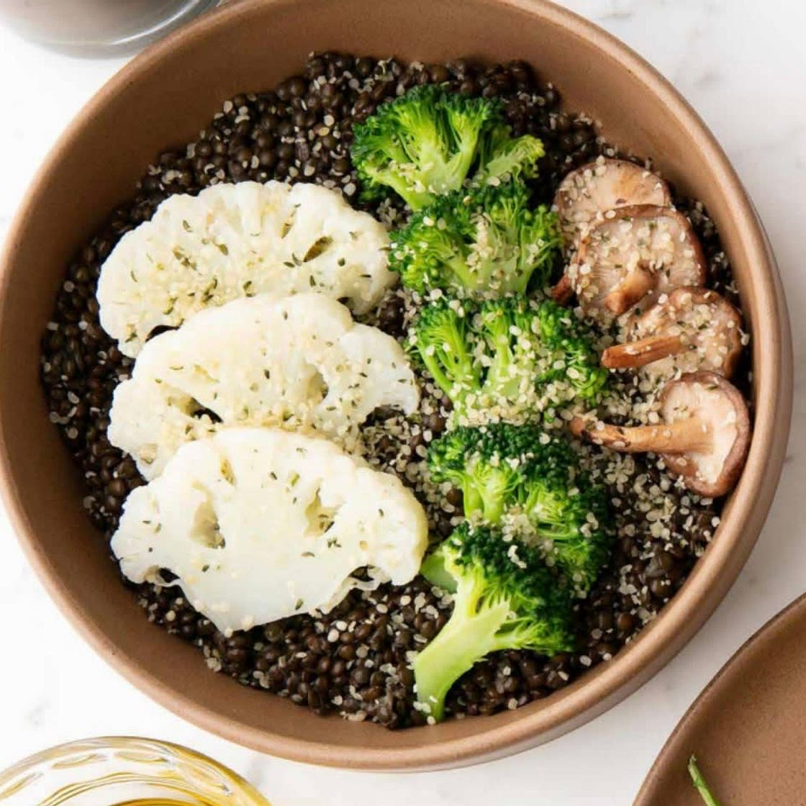

SuperVeggie

Ingredients
- 150g cauliflower
- 250g broccoli
- 50g of mushrooms (I use chestnut, but best is shitake or oyster)
- 45-50g of black dhal
- 1 lime
- 1 clove garlic
- 1 inch ginger
- 1 tbsp cumin powder
- 1/2 tsp turmeric powder
- dash of chill powder or flakes
- 1 tbsp olive oil
- 1 tbsp hemp seeds
Steps
- Rinse the black dhal and soak in water for 30 minutes.
- In a pot, add the soaked dhal and enough water to cover the dhal. Bring to a boil, then reduce heat and simmer until the dhal is cooked and soft (about 20-25 minutes). Drain any excess water if needed.
- While the dhal is cooking, add a caulinder above with the chopped cauliflower, broccoli and mushrooms and steam the veggies
- Heat olive oil in a large bowl, add the minced garlic and grated ginger, olive oil, turmeric powder, cumin powder, and chili flakes and mix
- Add the cooked veggies and mix with the dressing above.
- Add the cooked dhal on top of the veggies.
- Add the hemp seeds and more olive oil if you like. And voila, eat!